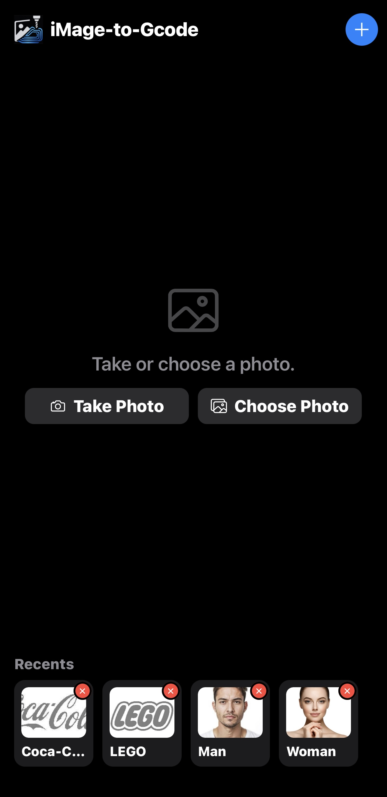
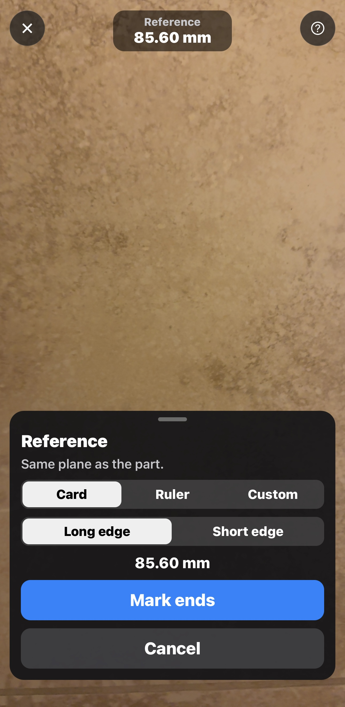
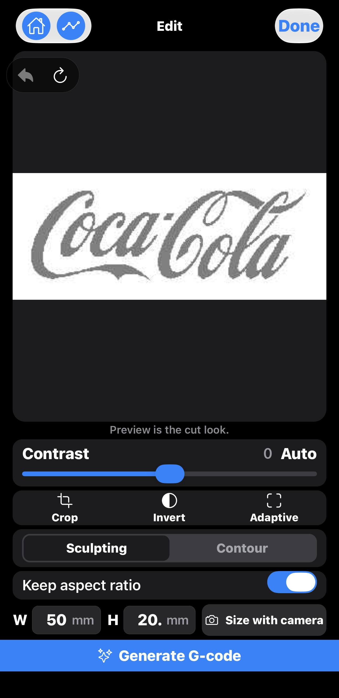
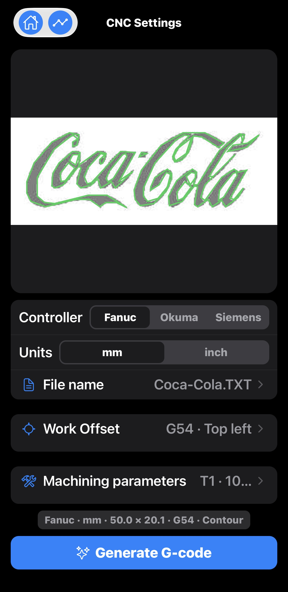
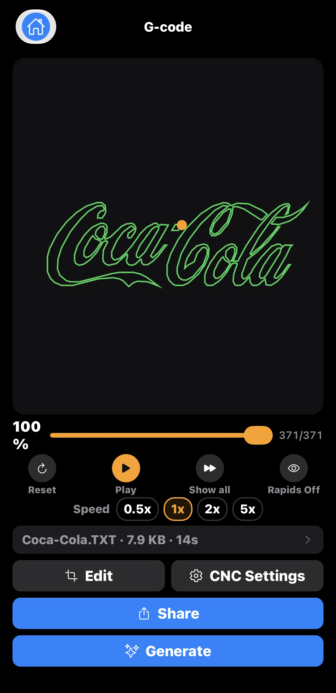

CNC · Photo · G-code
Photo in. Toolpath out.
iMage-to-Gcode turns a picture into CNC G-code on your iPhone — prepare the
image, generate the path, preview the cut, then share the file. A shop utility
for hobby makers, with the job kept on the device.
On your device
How it works
Four clear steps. No account required.
01 · Capture
Take or choose a photo
Camera or library — logos, sketches, or part photos.
02 · Prepare
Fit the job
Crop, contrast, and set size with camera calibration.
03 · Generate
Build G-code
Sculpting for relief, Contour for outlines — then preview.
04 · Share
Send the file
Share only when you choose — Files, Drive, AirDrop, or email.
Size with Camera
Set real millimetres on the workpiece before you generate.
Calibrate
A known reference
Hold a credit card or a ruler in the frame. The app uses that known size to set millimetres.
Overlay
On the workpiece
Aim the camera at the stock. The job sits on the part so width and height match what you will cut.
By hand
Width and height
Already know the numbers? Type width and height yourself. Camera calibration stays optional.
How it looks
Real screens. Under each one — what every control does, in plain words.

Home
Take or choose a photo. Recents keeps past jobs ready to reopen.
Add (+) Start from a new photo.
Take Photo Capture with the camera.
Choose Photo Pick from your library.
Recents Tap a card to reopen that job.
Delete × Remove that recent only — not your camera roll.

Size with Camera
Calibrate with a card or ruler so width and height match the workpiece in millimetres.
Card / Ruler / Custom A length you already know. Card is selected.
Long / Short edge Which side of the card you measure.
85.60 mm Known length for the long edge of a card.
Mark ends Tap the two ends of that length. Keep the reference on the same plane as the part.
Cancel Leave without changing the size.
Edit · Contour
Trace the outlines. Preview shows the cut look before you generate.
Done Leave Edit and keep this prep.
Undo / Redo Step back or forward one change.
Contrast + Auto Separate ink from background. Auto picks a start.
Crop / Invert / Adaptive Frame the job, flip light and dark, or use local edges.
Sculpting / Contour Relief carve, or an outline trace. Contour is selected.
Keep aspect ratio Height follows width.
W / H Width and height in millimetres. Here, 50 mm by 20 mm.
Size with camera Set those millimetres from a card or ruler.
Generate G-code Build the program and open the simulator.

Edit · Sculpting
Carve the picture as a surface. Same prep tools, denser path.
Preview The grayscale fill is the cut look for a relief carve.
Sculpting / Contour Switch modes anytime. Sculpting is selected.
W / H Same millimetre size as Contour — here, 50 mm by 20 mm.
Size with camera Calibrate from a known reference on the workpiece.
Generate G-code Build the denser sculpt program.

CNC Settings
Pick controller, units, work offset (WCS), and machining parameters.
Fanuc / Okuma / Siemens Dialect for your machine. Fanuc is selected.
mm / inch Units for sizes and coordinates. Millimetres are selected.
File name Output name. Here, Coca-Cola.TXT.
Work Offset Work coordinate system. Here, G54 · Top left.
Machining parameters Tool and feed summary. Here, T1.
Summary Fanuc · mm · 50.0 × 20.1 · G54 · Contour — the file you are about to write.
Generate G-code Write the file with these settings.

Simulation
Play the toolpath and check the cut before you share the file.
Contour path Green outline of the logo. The orange dot is the tool.
Progress Scrub the program. This job is at 371/371.
Reset Jump to the first move.
Play Run the path in G-code order.
Show all Draw the full path at once.
Rapids Off Hide non-cutting moves.
0.5× / 1× / 2× / 5× Playback speed — study slow, skim fast.
File · size · time Coca-Cola.TXT · 7.9 KB · 14s.
Edit / CNC Settings Change the job, then generate again.
Share Send the file only when you choose where.
Generate Rebuild G-code with the current settings.
Two cut styles
Match the path to the job. Switch and generate again anytime.
Sculpting
Carve the picture
Best for reliefs and engraved plates — the image becomes the surface.
Contour
Trace the outlines
Best when edges matter — the tool follows the shapes in the photo.
Why makers use it
Private by design
Photos, projects, and G-code stay on your device. A file leaves only when you Share. Ads may use a device advertising ID — see the Privacy Policy.
Recents on hand
Reopen past jobs, replay the preview, or share again. Delete anytime.
Read the Privacy Policy or
contact support — iMagetoGcode@Gmail.com.
FAQ
How do I set real size?
Use Size with Camera: calibrate with a credit card or ruler, then overlay the job on the workpiece. You can still type width and height by hand.
Do I need an account?
No. Core use works without sign-in.
Is the preview safe to run?
Preview is a guide. Always prove the path on the machine before cutting.